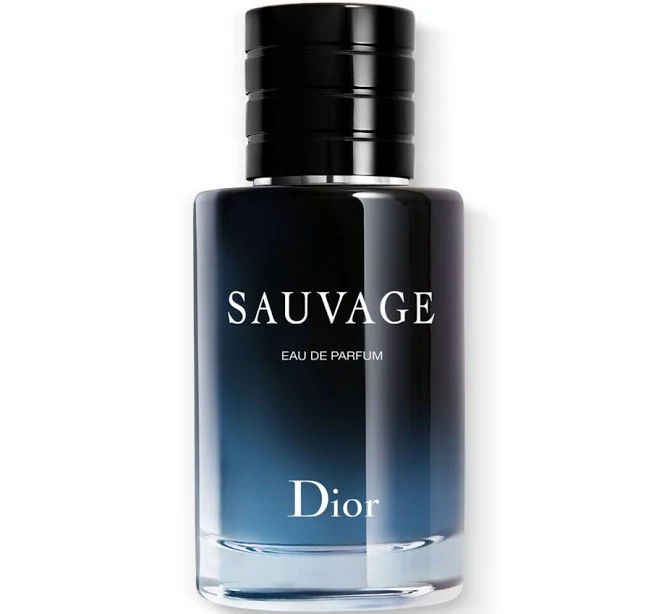
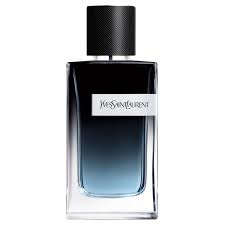

Currently Trending
-
Dior Sauvage Eau De Parfum
Notes: Woody, spicy, and fresh scent with cedar, cardamom, and vetiver notes.
Occasion: Perfect for evening wear and special occasions.
Longevity: Long-lasting, typically 8+ hours on the skin.
History: Dior Sauvage was first launched in 2015 by Dior’s in-house perfumer
François Demachy as a modern reinterpretation of the brand’s classic masculine spirit,
inspired by wide-open landscapes and raw nature with notes like bergamot and ambroxan. -
Armani Stronger With You Intensely

Notes: Warm and spicy scent with vanilla, cinnamon, and chestnut notes.
Occasion: Ideal for romantic evenings and colder weather.
Longevity: Long-lasting, typically 7-9 hours on the skin.
History: Launched in 2017 as a follow-up to the original Stronger With You,
this fragrance by Giorgio Armani emphasizes deeper, more intense notes
to evoke passion and connection. -
Yves Saint Laurent Y Eau De Parfum
Notes: Fresh and aromatic scent with bergamot, ginger, and sage notes.
Occasion: Versatile for both day and night wear.
Longevity: Moderate to long-lasting, typically 6-8 hours on the skin.
History: Introduced in 2017, Y by Yves Saint Laurent was created by perfumer
Dominique Ropion to capture the spirit of a new generation of
men who are ambitious.